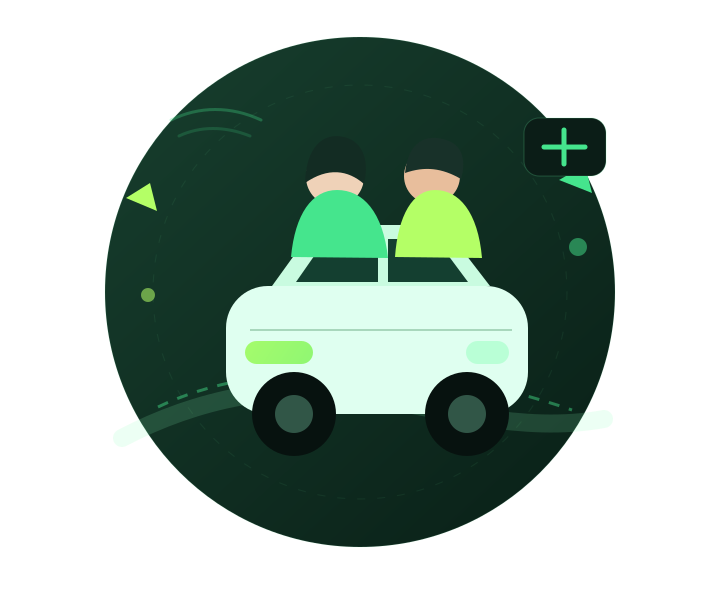
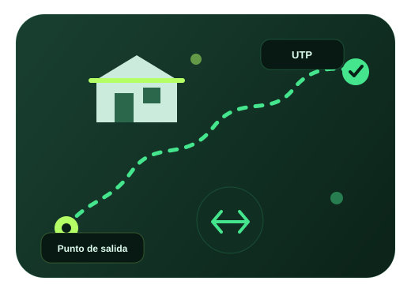

Verifica tu perfil
Regístrate con tus datos universitarios para mantener una comunidad exclusiva de estudiantes.
Encuentra compañeros de la UTP que pasan cerca de ti, reserva un asiento y llega a clases con menos transbordos, menor costo y una comunidad verificada.

Selecciona tu zona de origen y el sistema te sugiere los conductores mejor calificados para acompañarte a la UTP, priorizando cercanía, horario y disponibilidad.
🔒 Inicia sesión para desbloquear el mapa inteligente y las sugerencias de conductores cercanos. Ir al acceso →
Mosaicos © OpenStreetMap · Datos de mapa © colaboradores de OSM
⚠ No se pudieron cargar los mosaicos del mapa. Las zonas y las sugerencias siguen calculándose con el modelo interno.
Sobre esta simulación: las sugerencias las produce un motor determinista
(grafo de zonas + ponderación de cercanía, horario, reputación y disponibilidad) implementado en
ia_simulada.py. No se conecta a ninguna API de inteligencia artificial externa.
La plataforma organiza viajes que ya iban a realizarse y permite dividir únicamente el gasto de gasolina.
Regístrate con tus datos universitarios para mantener una comunidad exclusiva de estudiantes.
Busca una ruta cercana a tu zona o publica los asientos libres de tu recorrido habitual.
Reserva, acuerda un punto seguro y divide la aportación de gasolina indicada por el conductor.
Rodando UTP busca reducir traslados innecesariamente largos y aprovechar mejor los vehículos que ya se dirigen a la universidad.

La propuesta limita la comunidad a estudiantes identificados de la UTP.
Conductores y pasajeros pueden evaluar la experiencia después del trayecto.
Prioriza lugares conocidos, iluminados y fáciles de identificar para abordar.
Se puede instalar desde el navegador y conservar una experiencia básica sin conexión.